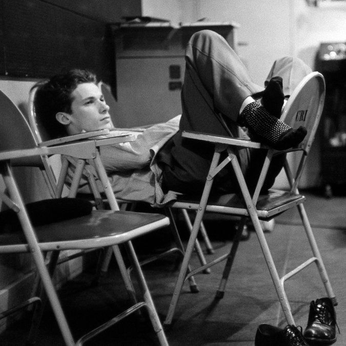
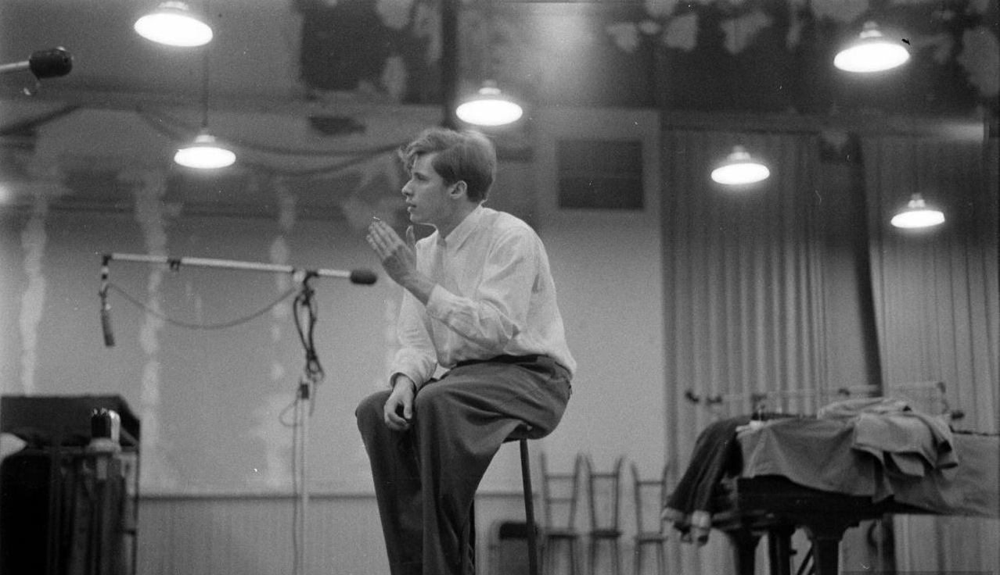
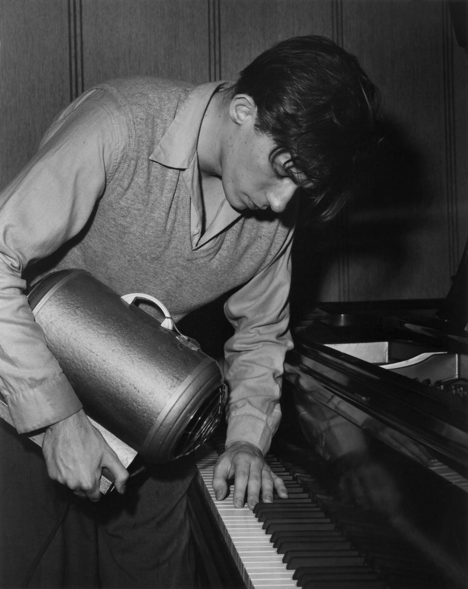

  
Sorry, your browser does not support HTML5 audio.
Prelude & Fugue 01 in C, BWV846 - 1 Prelude
Prelude & Fugue 03 in C#, BWV848 - 1 Prelude
Prelude & Fugue 17 in Ab, BWV886 - 1 Prelude
English Suite 1 in A, BWV806 - 07 Sarabande
French Suite 5 in G, BWV816 - 7 Gigue
Goldberg Variations - Variatio 15 a 1 Clav. Canone...
Goldberg Variations - Variatio 25 a 2 Clav.
Goldberg Variations - Variatio 28 a 2 Clav
Partita 4 in D, BWV828 - 5 Sarabande
Partita 6 in e, BWV830 - 1 Toccata
Contrapunctus VIII (a 3)